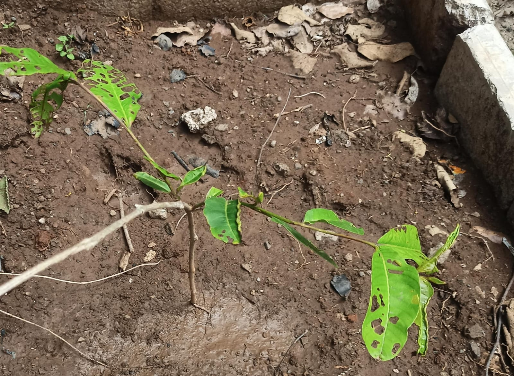

Anjan Tree

Plant Information
Botanical Name:
Hardwickia binata (Roxb)
Common Name: Anjan / Anjan Tree
Family: Fabaceae
Description
Anjan is a medium to large deciduous tree with slender
branches and green leaves. It is commonly found in
dry regions of India.
Medicinal Uses
-
Traditionally used in herbal preparations,
particularly for skin and digestive-related purposes.
-
Traditionally used for fever and general body ailments.
-
Traditionally used for digestive disorders.
-
Some parts of the plant have been used in
Ayurvedic and folk medicine.